You don't have enough romance !
Last Update 2017.07.02
ここでは、現在入手可能な 電子部品通販 M.A.D. さんにて販売されているMSX用ユニバーサル基板 MCC-159代替品とケースの相性を 書いておきます。MSXではコネクタ部の規定はありますが、ケースを固定するため のボス等については規定が無く、基板の入れ替えには注意が必要です。
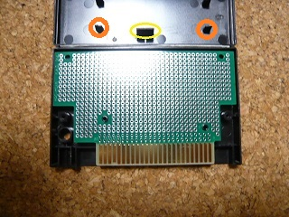
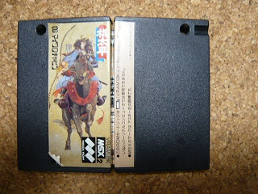
特徴としては前面のネジ以外に、センターにフックがあるので開ける際に注意が必要です。
MCC-159代替品を使うには黄色で示したフックをカットする必要があります。また、オレンジ色で しめしたような基板の支えが内部に前ケースに6ヶ所、後ろケースに6ヶ所あります。それも基本的 には邪魔で不要なのでカットしましょう。中の空間は一番大きくて使いやすいケースです。 私も昔、これで似非SCSIを作りました。
使われているゲーム例：棋太平, MSX英和辞典, ロマンシア, HOLE IN ONE, ホール・イン・ワン プロフェッショナル, てつまん 等
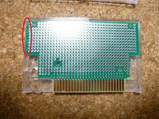
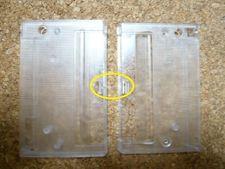
特徴としては背面のネジ以外に、センターにフックがあるので開ける際に注意が必要です。 また、前面にMSXのロゴがあります。
MCC-159代替品を使うには黄色で示したフックをカットする必要があります。 また、右側が若干下がりますが、使用上は問題ないでしょう。 ただし、赤色で示した部分がケースと干渉するため、基板を若干削る必要があります。
使われているゲーム例：プレイボール, ロードランナー, ロードランナーII, 画楽多 等
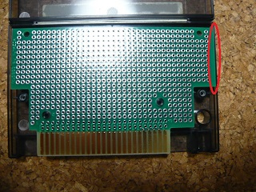
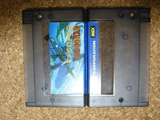
特徴としては背面ネジを外すだけで開けられる一番開けやすいケースです。
MCC-159代替品だと右側が若干下がりますが、使用上は問題ないでしょう。ただし、 赤色で示した部分がケースと干渉するため、基板を若干削る必要があります。
使われているゲーム例：ジャイロダイン, 魔界島, 軽井沢誘拐案内, ドラゴンクエスト, ARKANOID, ハイドライドII 等
MCC-159とセットで売られていたケースもこれだと思われるですが・・・。
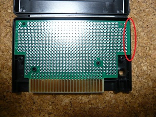
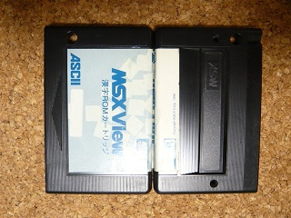
特徴としては背面ネジを外すだけで開けられる一番開けやすいケースです。 背面にMSXのロゴがついているのがオススメ３のケースと見分けるポイントです。MSXのロゴの代わりにソフトウェアベンダのロゴ（KOEI等）が入っている場合もあります。
注意点はオススメ３と同じです。
使われているゲーム例：MSX View漢字ROM, 忍者くん 阿修羅の章, 京都龍の寺殺人事件, スターヴァージン, R-TYPE, パックマニア, イシターの復活, ゼビウス ～ファードラウト伝説～, ドラゴンクエストII, ビクトリアス・ナインII 等
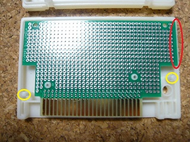
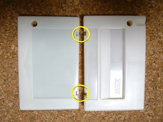
MSX Cartridge Shop さんで売られているカセットで使われているケースです。背面にMSXのロゴがあります。 基板の中をつらぬくボスは他のケースと変わりませんが、基板の横にも黄色で示した 長いボスがあり、垂直にケース前面を持ち上げないとうまく開けられません。しかもケース 上部に黄色で示したフックが二ヶ所あり、開けるのがちょっと手間です。
しかし、新規で金型 を作ったらしく、今でも購入可能なケースの一つです。ケースだけでも売ってくれるようで、 色はBlackとOff-whiteの2種類あるようです。
左右の長いボスはカットし、上部のフックもカットしてラベルで留めるようにすれば使いやすいかも知れません。
注意点はオススメ３と同じで、赤色で示した部分がケースと干渉するため、基板を若干削る必要があります。
使われているゲーム例：MSX Cartridge Shopさんで売られているゲーム
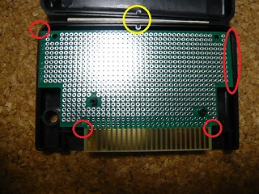
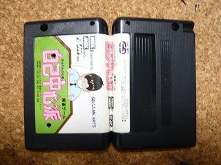
特徴としては前面のネジ以外に、黄色で示した位置に細いボスがあるので開ける際に注意が必要です。 垂直にケース前面を持ち上げないとうまく開けられません。また、背面にMSXのロゴがあります。
MCC-159代替品を使うには干渉する部分が多すぎるためオススメしません。ケースの上部の角が丸いため、 基板の角と干渉します。基板の端も他のケースと同様に干渉します。極めつけは基板の出口もケースと 干渉します。
使われているゲーム例：ぎゅわんぶらあ自己中心派, ぎゅわんぶらあ自己中心派２, エルスリード 等
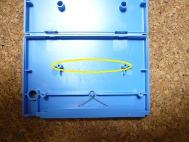
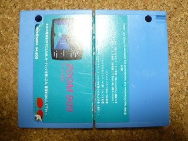
特徴としては前面のネジと端子部にあるシャッター。初期のゲームに多いようです。
基板をつらぬくボスが水平に並んでおり、MCC-159代替品をはめ込むことすらできません。
余談ですが2013年の夏頃にヤフオクでケースのみ100個で1000円とか出品されていましたが、それはこのケースです。 出品元が四国の方のようでしたので、エ○ール辺りからの払い下げなのかなと思ったり思わなかったり。
使われているゲーム例：ZOOM 909, スカーレット７, ダムバスター 等
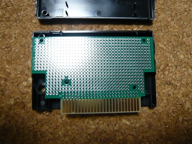
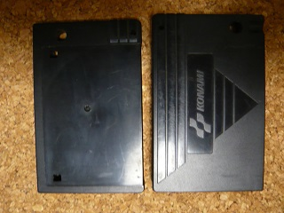
コナミのSCCカートリッジで使われています。６ヶ所あるフックを一個も壊さずに開けられれば一人前。
MCC-159代替品をはめ込むことはできますが、ボスが低い位置にあるために基板がケースより下にはみ出し実用的ではありません。
使われているゲーム例：激突ペナントレース, 激突ペナントレース２, SALAMANDER, ゴーファーの野望 EPISODE II, F-1 SPIRIT, PARODIUS, グラディウス２, クォース, SDスナッチャー SOUND CARTRIDGE 等
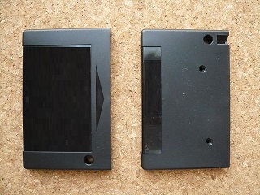
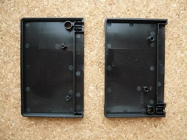
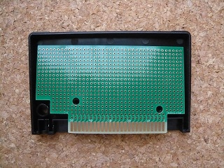
REPRO FACTORY さんで売られているカセットで使われているケースです。ネジ止めですが、コナミの基板に合わせたケースになっています。 M.A.D.さんのMCC-159代替品には使えませんが、このケースは基板とセットで売られていますので、自作用に十分使えます。コナミのケースを壊してしまった場合に使うという手もあります。ケースだけでも売ってくれるようで、 色はBlackとOff-whiteの2種類あるようです。最近8bits4everさんで販売されているFDDインターフェースもこのケースを使用しています。
使われているゲーム例：REPRO FACTORYさんで売られているゲーム
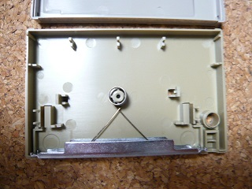
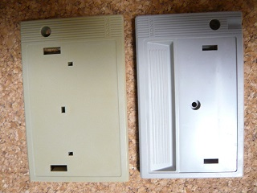
SONYのロゴ入りケース。シャッターがあるのも特徴。中心にネジ、その他にフックが2ヶ所。 水平に並んでおり、MCC-159代替品をはめ込むことすらできません。
使われているゲーム例：実戦4人麻雀
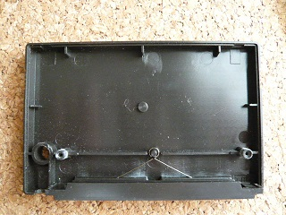
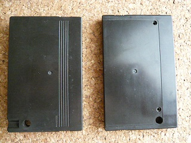
NG2に似ていますが、ラベルが左下の丸い穴を避けるように貼られるのが特徴。前面ねじで背面に小さく「JAPAN」のロゴがあります。ネジ止め部分がそのままボスになっており、これに合う自作基板は無いと思われます。
使われているゲーム例：3-D ゴルフシミュレーション
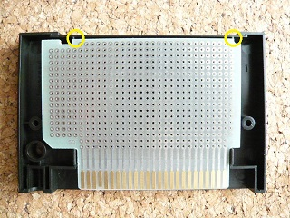
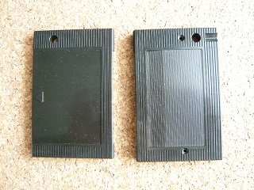
シールが上面と前面に分かれているのが特徴。外側には何のロゴもありませんが、内側に「TAXAN」のロゴあり。MCC-159代替品に対してはNGでありますが、MCC-158は基板をちょっと削ればうまく使えそうなケースです。ヤフオクでそのセットで出品している人がいて参考にさせて頂きました(^^;
使われているゲーム例：ちゃっくんぽっぷ
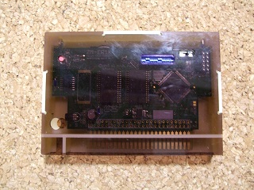
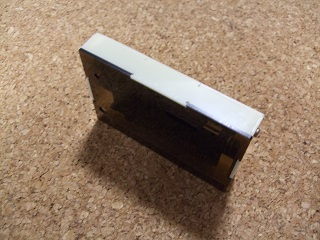
高額な金型が必要なケースには手を出さず、アクリル板を組み合わせてケース化する人も出てきました。
使われているゲーム例：電子部品通販 M.A.D.さんのケース
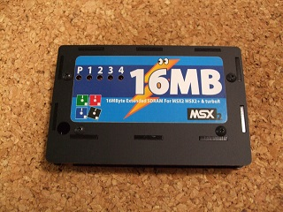
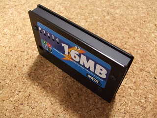
こちらもアクリル板を組み合わせてでケース化しています。
使われているゲーム例：クラシックPC救済委員会さんのケース
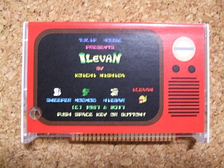

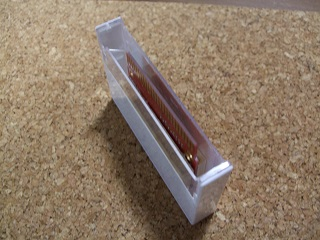
こちらはカセットテープのケースを流用しています。ボンドで取り付けというちょっと強引ですが安価で実用的です。カセットテープが復権したからこそ出来たのでしょうか？
使われているゲーム例：Tulip Houseさんのケース

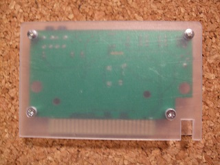
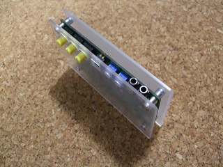
こちらもアクリル板の組み合わせですが、前面と後面のみです。側面の板がないので分、背面のスロットに差し込むときにうまく位置合わせを出来ない事があります。
使われているゲーム例：NX Labsさんのケース
 戻る
戻る